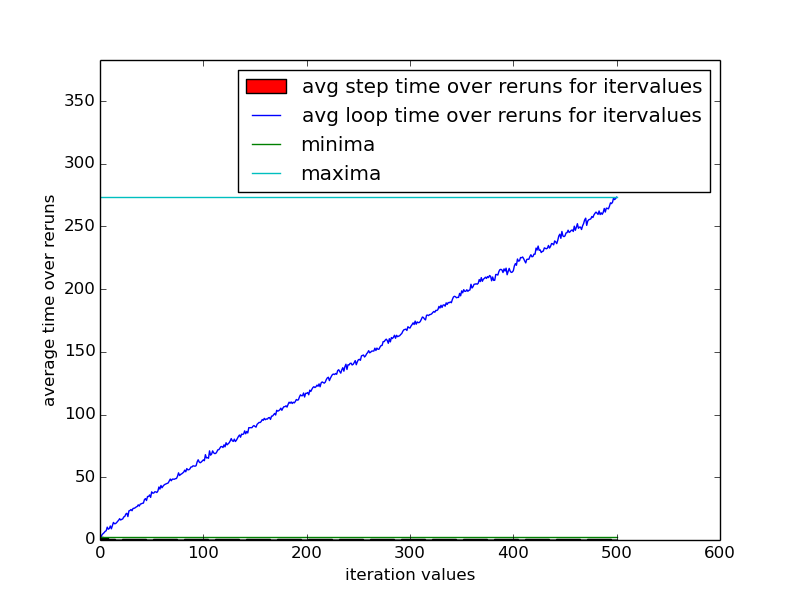
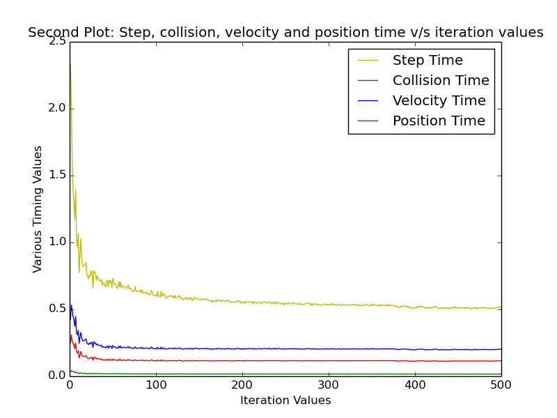
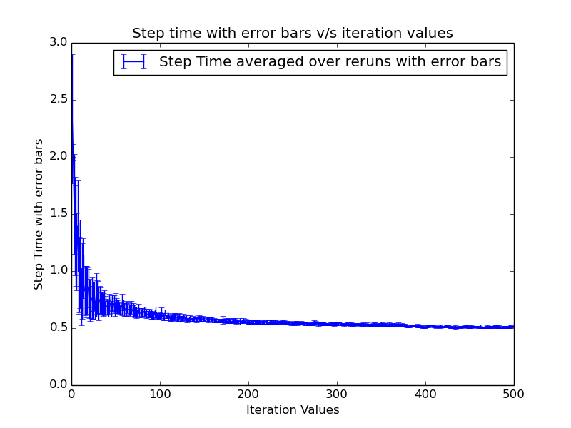

Bhargav Chippada
120050053
bhargav.chippada19@gmail.com
Prateesh Goyal
120050013
g.pratish@gmail.com
Bhupendra Singh Bhuarya
120050040
bsbhuarya@gmail.com
also

The total loop time is monotonically increasing with the number of iterations. At the beginning the slope is high implying the loop/step time time at the beginning of the iteration values of loop is high, later at larger iteration values the loop/step time is low therefore the slope of total loop time at larger iteration values is lower. The graph is almost linear proposing that the total loop time increases with the number of iteration value almost at a constant rate.

collision time+velocity upd time+position upd time=sum
This equation is showed in the graph. Also see that the step time is far larger than the sum time implying there are other processes taking time. Also note that at low iteration value the step time is large and it decreases and saturates as the iteration value increases. This can be modelled as follows:
We can say that there is a fixed constant time(F) process taking place at the beginning whenever the simulation is run and every loop iteration takes a constant time(C) which is also known as the step time. Therefore for a particular number of iterations(N): The average step time is (F+C*N)/N
Time spent in velocity updates is far greater than position update and collision time.//
The average looptime is greater then the average step time as some extra operations are also performed in the main loop per step.

Similar to the explanation given for graph 3 we can say that the expression governing this graph is close to (C+(F/N)). Also the fixed time(F) taken whenever the simulation is run varies greatly compared to C due to system load, memory load,etc. So we can assume the error is largely due to F/N which is large when N is small because for a small change in F the term F/N is significant. Therefore at low iteration values the graph has higher average step time and greater error corresponding to it and at higher iteration values it has lower average step time and lower error. The error arises due to the uncertainity in the system and not beacuse of the code.
Graph 4 and 5 of lab 5 did not give any important inferences so they were excluded.
If the system was loaded heavily(cpu wise) then the average time taken for all the steps increases which is what is expected as loading cpu with processes means more processes for the cpu to execute as a result average step time increases. But for visible time differences the cpu should be heavily loaded.
If the system was loaded heavily(ram wise) then the average time taken for all the steps remains almost the same. But if the free ram left is lesser than required by our program then the process will be heavily affected but, this is really hard as the memory requirement of base code are minimal.
All the graphs here are fairly smooth as expected. There is no sudden increase in step time anywhere and overal the step time is constant. The Step time is initially high because a lot of time is spent in intializing the fixtures and joints but as time progresses theres is no longer need of them. The main constaints need to be solved for the bicycle actually dont change with time much as the bicycle remains intact during the complete simulation explaining the asymptotic nature of step time.
Collision time is really low as compared to step time as the parts in the body are rarely colliding but are in fact in contact all the time. The time spent in updating velocity and position is considerably high though.
Also as expected the uncertainity at ther start is maximum.